Scalable online imitation learning for visual navigation
NavOL: Navigation Policy with
Online Imitation Learning
Learning on the policy’s own rollouts with real-time supervision from a privileged global planner.
01 / Overview
Abstract
Learning robust navigation policies remains a core challenge in robotics. Offline imitation learning suffers from distribution shift and compounding errors at rollout, while reinforcement learning requires careful reward engineering and learns inefficiently. We propose NavOL, an online imitation learning paradigm that interacts with a simulator and updates itself using expert demonstrations gathered online.
Built upon a pretrained navigation diffusion policy that maps local RGB-D observations to future waypoints, NavOL trains in a rollout–update loop: during rollout, the policy acts in the simulator and queries a global planner with privileged access to the scene for the optimal path segment as ground-truth trajectory labels; during update, the policy is trained on the online-collected observation–trajectory pairs. This online imitation loop removes the need for reward design, improves learning efficiency, and mitigates distribution shift by training on the policy’s own explored rollouts.
Built on IsaacLab with fast, high-fidelity parallel rendering and domain randomization of camera pose and start-goal pairs, our system scales across 50 scenes on 8 RTX 4090 GPUs, collecting over 2,000 new trajectories per hour, each averaging more than 400 steps. We also introduce an indoor visual navigation benchmark with predefined start and goal positions for zero-shot generalization. Extensive evaluations on the NavDP benchmark and our proposed benchmark, as well as carefully designed real-world experiments, demonstrate consistent performance gains of NavOL in online imitation learning.
02 / Learning loop
Method
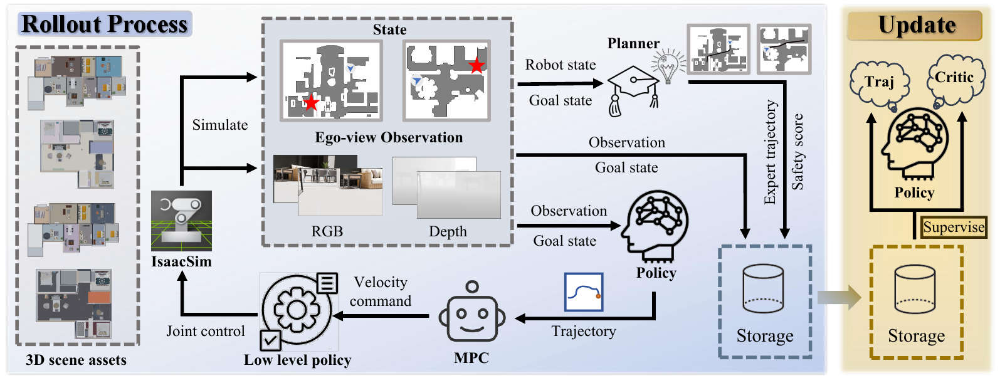
The NavOL rollout–update loop. The policy is initialized from a pretrained navigation diffusion model (NavDP) that maps RGB-D observations and a goal embedding to future waypoint trajectories. At each simulator step, a privileged global planner computes the optimal path segment from the agent’s current pose to the goal, serving as a per-step trajectory label. Rollout data are aggregated into an online buffer and used to update the diffusion policy with the standard DDPM denoising objective. The loop trains on the policy’s own visited state distribution, mitigating the compounding errors associated with offline imitation learning.
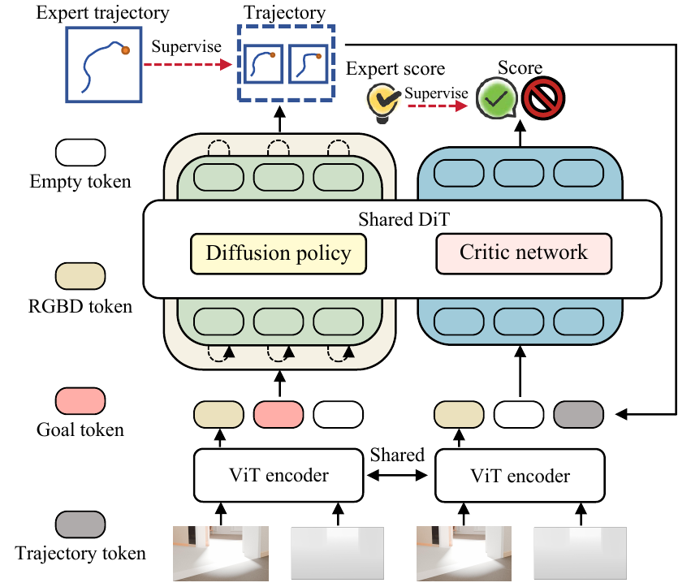
Shared policy & critic
Generate diverse trajectories. Rank for safety.
NavOL uses a shared DiT backbone for trajectory generation and critic prediction. At deployment, multiple waypoint candidates are sampled and the critic selects the highest-scoring trajectory before MPC execution.
- 01 RGB-D observations and the point goal condition trajectory generation.
- 02 The critic learns safety labels from privileged planner supervision.
- 03 The planner and NavMesh are absent from the deployment loop.
03 / Evaluation
A New Indoor Navigation Benchmark
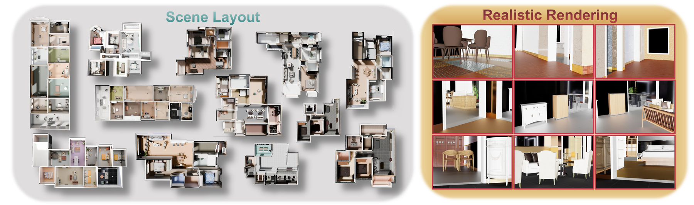
We curate a visual indoor navigation benchmark from processed 3D-FRONT scenes, with fixed start–goal pairs for repeatable point-goal evaluation. The released assets include in-domain and out-of-domain scene packages, portable manifests, and raw source archives for rebuilding the benchmark pipeline.
Download benchmark assets04 / Results
Qualitative Results
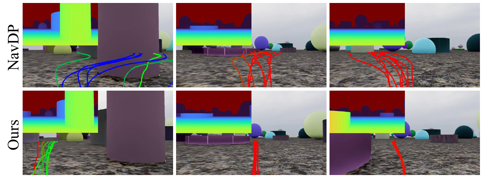
Compared with offline navigation baselines, NavOL produces smoother and more obstacle-aware trajectories in cluttered indoor scenes. Online supervision on policy-visited states helps mitigate the distribution shift and compounding errors that arise with fixed demonstration datasets.
Additional evidence
More Visualizations
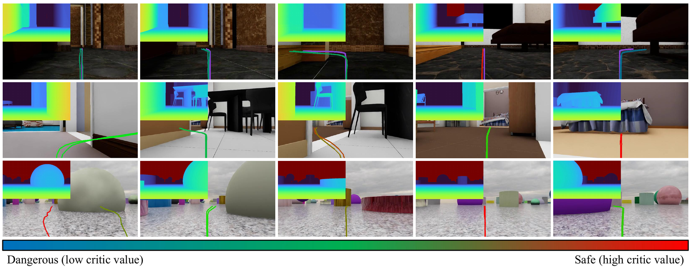
In-domain trajectories on 3D-Front scenes.
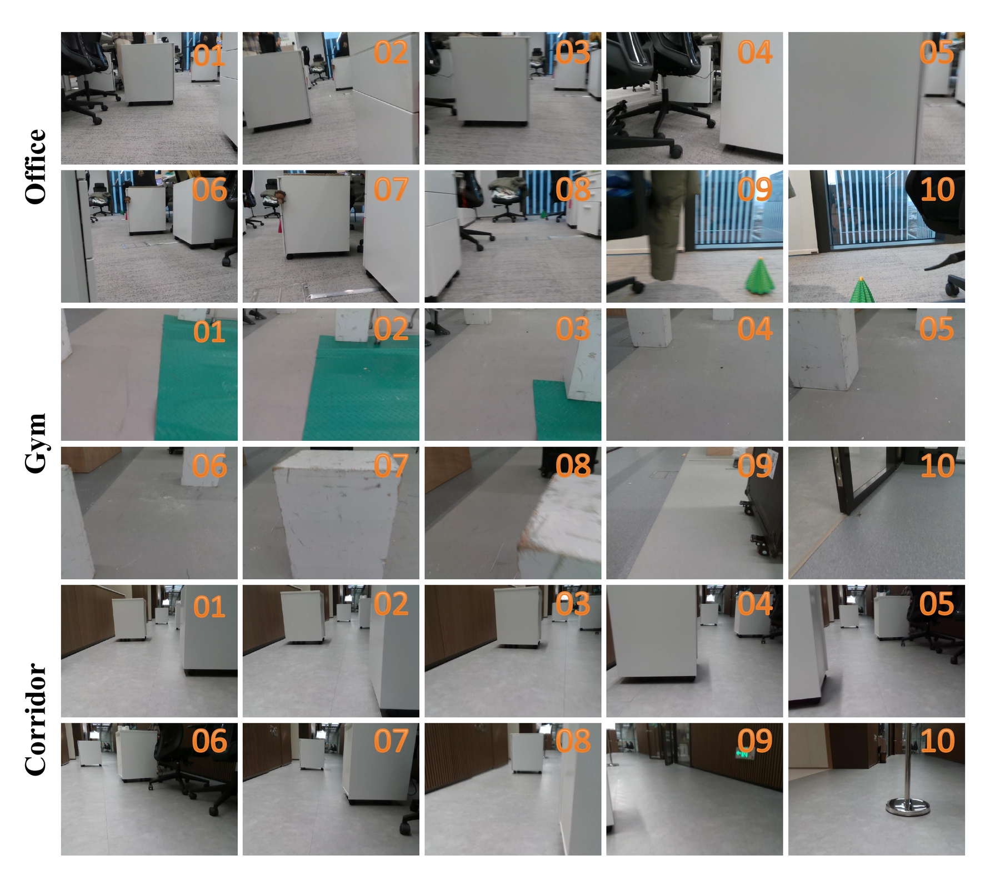
Zero-shot deployment on a Unitree Go2.
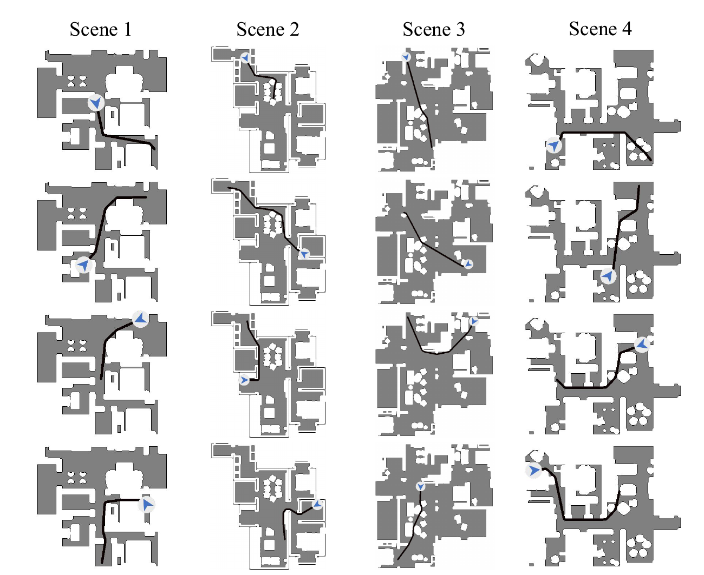
Comparison of planned vs. executed trajectories.
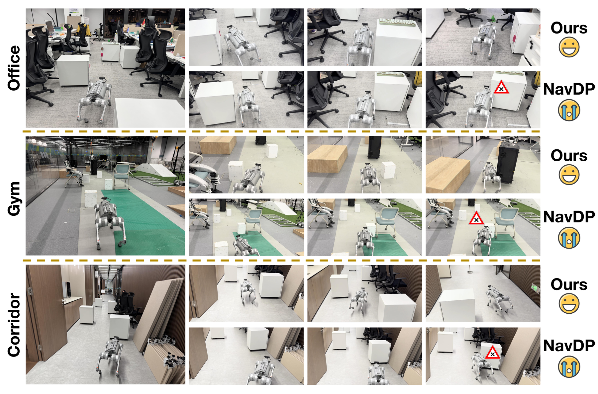
Real-world quantitative results across three scenes.
05 / Sim-to-real
Real-world Demonstrations
We deploy NavOL zero-shot on a Unitree Go2 equipped with a RealSense D435i camera, with no real-world fine-tuning. The policy transfers from simulation to three indoor evaluation settings: an office, a gym, and a corridor.
Environment 1 — trial 1
Environment 1 — trial 2
Environment 1 — trial 3
Environment 2 — trial 1
Environment 2 — trial 2
Environment 2 — trial 3
Environment 3 — trial 1
Environment 3 — trial 2
Environment 3 — trial 3
Real-world Captures
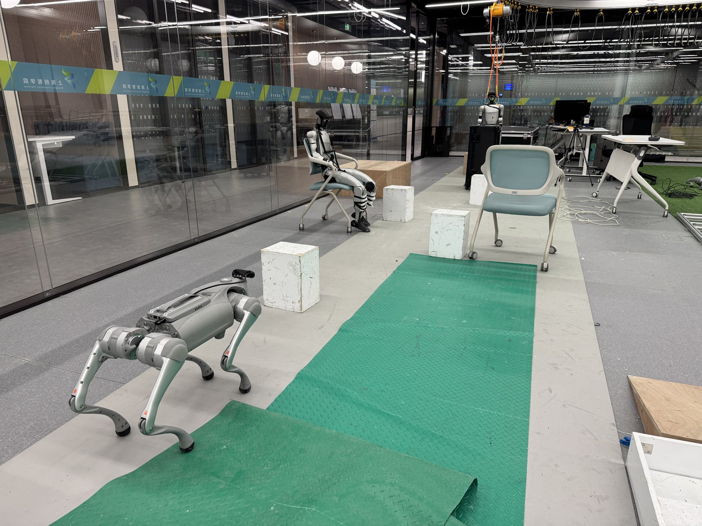
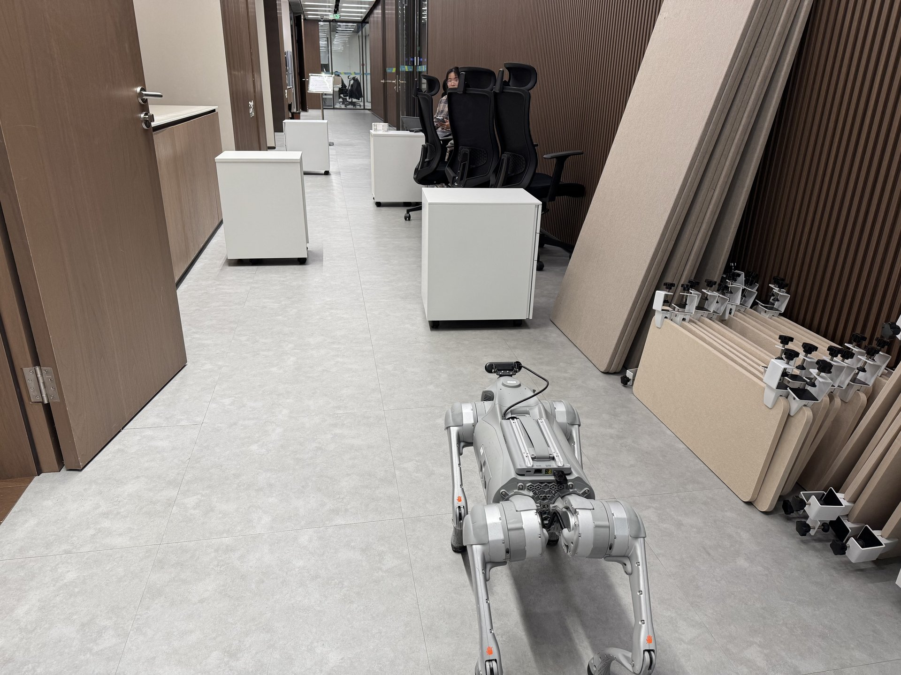
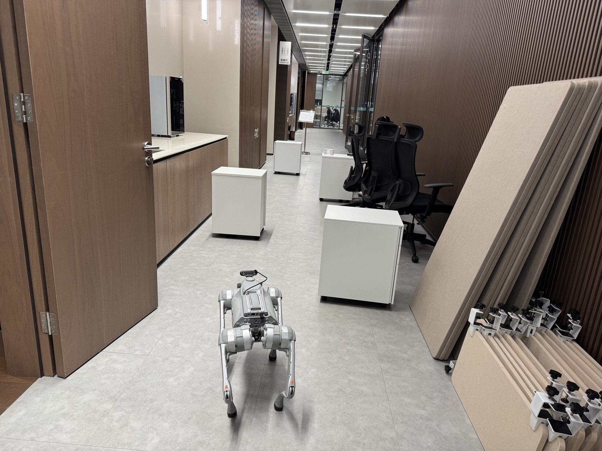
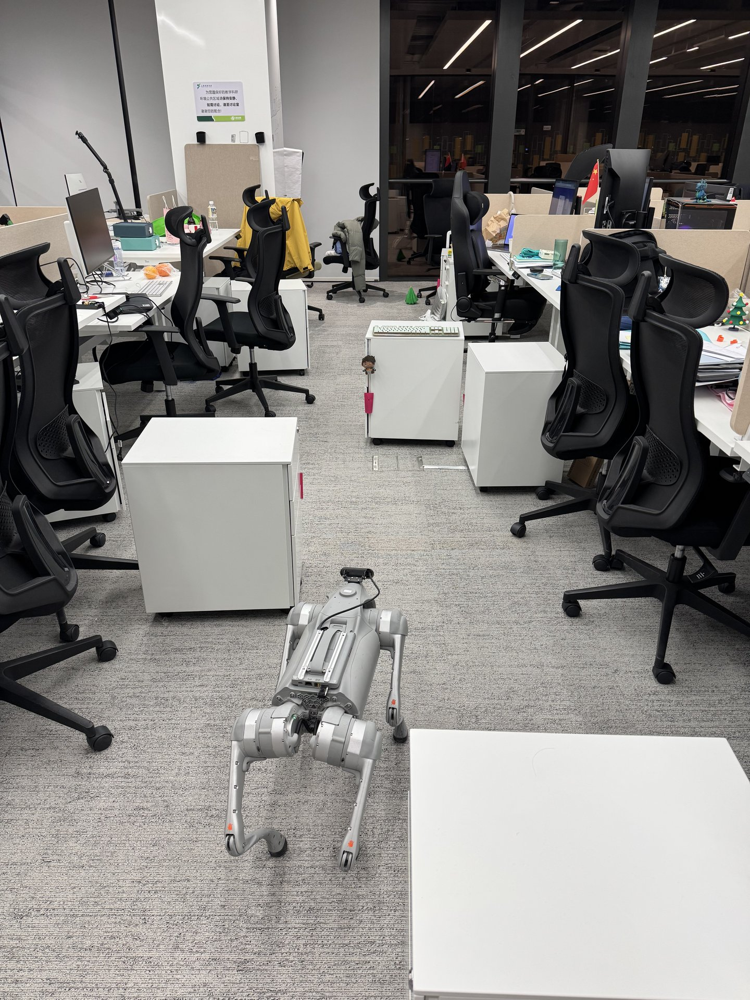
Unitree Go2 used for zero-shot sim-to-real evaluation, with RGB-D observations provided by a RealSense D435i camera.
06 / Citation
BibTeX
@inproceedings{wei2026navol,
title = {{NavOL}: Navigation Policy with Online Imitation Learning},
author = {Wei, Xiaofei and Gu, Chun and Zhang, Li},
booktitle = {Forty-third International Conference on Machine Learning},
year = {2026},
eprint = {2605.11762},
archivePrefix = {arXiv},
primaryClass = {cs.RO},
url = {https://arxiv.org/abs/2605.11762}
}